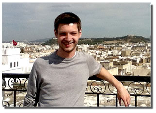
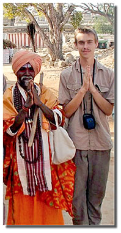

ORPSEF Donor Sponsored Scholarships
Oak Ridge High School has many intelligent, determined and motivated students who yearn for a college education. Unfortunately, about half the student population reside in homes requiring free or reduced lunch. Only one thing makes obtaining a college degree impossible for them – funding. Even with Tennessee Promise, the ever increasing costs of college along with textbooks makes earning a four year degree unmanageable for many. It is our desire to expand our donor sponsored scholarship program to provide more students who seek to acquire a four year degree the assistance they need to reach their goal. As you will read next, Tim and Teresa Myrick took notice of this need through Tim’s volunteer work in the classroom. The donor sponsored scholarships program will only grow through the contributions of caring, generous people like you.
Myrick Donation & Scholarship
Tim and Teresa Myrick Support Grants Campaign and Scholarship Programs
Tim Myrick’s work as a loan executive and later a volunteer in the Oak Ridge High School renovation and rebuilding project led Tim and his wife Teresa to contribute in support of academic studies dear to his heart. The couple made a $25,000 pledge to the Foundation’s Making the Critical Difference Grants Campaign. Of that amount, $15,000 was designated for ORHS Science Department grants and $10,000 for scholarships for environmental science students. The gift provides a $1,000 scholarship to an AP environmental science student each year for 10 years. In 2013, the Science Department grant provided lab equipment and digital cameras for microscopes.
Tim’s involvement with the high school came after he guided the $350 million modernization undertaken by UT-Battelle at Oak Ridge National Laboratory in the early 2000s, as project manager for the facilities revitalization program. ORNL later offered Tim’s leadership talent to help guide the complicated $61 million high school project, and Tim was eager to help. When he retired from the lab in 2004, he continued as a volunteer consultant on the project until completed in 2008.
Noting Tim’s concerns for the environment and energy savings during rebuilding of the high school, a science teacher invited him to come in as a volunteer teacher in an AP environmental science class once a week. Tim has actively participated in the AP environmental science course at Oak Ridge High School since 2008, often giving lectures, participating in field studies or discussing ongoing environmental management projects. Noticing that teachers’ needs in the classrooms and labs were often greater than budgets provided for, and that some motivated students needed help with college expenses, he and his wife decided to make the gift to the Foundation.
2014 Myrick AP Environmental Science Scholar

Kristina Cunningham enjoyed Tuesdays in her advanced placement environmental science class, when guest lecturer Tim Myrick brought real-world examples of environmental issues into the classroom. Tim noticed Kristina’s dedication to her studies and commitment to environmental causes. He selected her to receive the 2014 $1,000 AP environmental science scholarship that he and his wife Teresa presented.
"I have a strong passion to help the earth,"" Kristina commented on her interest in environmental sciences. "We need to develop new technology to help bring change. We’re all responsible for what’s going on, but I want to help bring change."" A 2014 graduate of Oak Ridge High School, Kristina is continuing her studies in environmental engineering at Tennessee Tech University.
"I selected Kristina because from the very first month in the AP environmental science class, I could tell she was very committed to environmental causes, was a dedicated student, and was very personable," Tim said. He added that he could see that she would be an excellent college student and professional engineer and a responsible advocate for environmental issues throughout her life.
Dr. Adrian Lawler Scholarship
Dr. Adrian R. Lawler Exchange Student Scholarship Endowment
Dr. Adrian R. Lawler wanted to offer students opportunities to gain tolerance and understanding of people from other cultures, just as he had as an American Field Service international exchange student from Oak Ridge High School in 1957. In 2008, he chose the Foundation to administer the Dr. Adrian R. Lawler Exchange Student Scholarship for international study, with a five-person committee to screen applicants and make the award. Available to students in Oak Ridge schools and recent graduates
who are attending college, the scholarship assists in study abroad programs. He designed the scholarship to continue in perpetuity, and a bequest in his will endowed the scholarship after his death in 2013.
The Lawler scholarship has helped nine Oak Ridge High School students and graduates pursue studies in Hong Kong, India, Tunisia, Germany, Japan, France, South Korea and Italy. Scholarships are usually in a range of from $500 to $2,000. The scholarship will not usually provide total funding, but instead encourages students to earn part of their funding as a life lesson. "This experience was part of the foundation of my independent nature and thinking," Lawler had said in establishing the scholarship. He was 16 when he stayed with two families in Göteborg and Stockholm, Sweden, and traveled independently while there. “That gave me first-hand experiences in other cultures, making me more tolerant and understanding of others. I went to Sweden as a teenager and came back more mature, as a young man."
He retired in 1998 in Mississippi after a career as a marine biologist, having discovered a fish gill parasite new to science and developing a fish attractant that was patented. His interest in the field began when he was a boy collecting specimens in the woods and creeks of east Tennessee in the 1940s.
The Scholarship Committee seeks applications that include a one-page essay, a brief resume, three references, and other qualifying information. The committee reviews the scholarship applications seeking a candidate who demonstrates an independent nature and an interest in international affairs.
Spring 2014 Dr. Adrian R. Lawler Scholar
Studying and working with students at Hong Kong City University, Patricia Garland viewed sustainability challenges and solutions through a new lens. "Culturally, it was one of the best experiences I’ve ever had. I had never been able to work with other cultures in this capacity," said Patricia. "It was fascinating." Her crosscultural learning experience has provided valued insights that will help her as she pursues a career in sustainability, either working on a college campus or for a company in the private sector. Now earning a master’s degree in sustainability from Arizona State University, she encountered real challenges during her study abroad – decreasing marine biodiversity affecting the fishing industry, and landfill space quickly filling up while serving Hong Kong’s 7 million inhabitants. Policy solutions, she learned, must take the political realities into consideration.
Fall 2013 Dr. Adrian R. Lawler Scholar
Benjamin Gavin found that the impact of the Arab Spring was still visible and alive in Tunisia during studies there in 2013. He observed barbed wire cordoning off areas in the capital and heard of clashes between police and Muslims associated with the Salafi movement. He also experienced riding a camel, sleeping under the stars in the Sahara desert, and visiting a number of historic Berber sites.
A Rudis Fellow as an undergraduate at Loyola University in Chicago, he used his research grant from the fellowship and his Lawler scholarship for his project, "Comparative Constitutional Change in North Africa as a Result of the Arab Spring: Comparative Case Study Analysis of Egypt, Libya and Tunisia."
"Believe me, the Lawler scholarship helped quite a bit in studying abroad," said Benjamin, an international studies and international business major. He visited and studied in several countries that school year, including Vietnam, Japan and Cambodia, aiming toward a life goal of seeing every country in the world. He plans to pursue a doctorate in international studies and he is considering a future position with the U.S. State Department’s Foreign Service.
Spring 2013 Adrian R. Lawler Scholar
Robert Smith absorbed the culture of India as he studied philosophy during a semester abroad in the spring of 2013. “As a developing nation, India is of great interest to me as a future economist in that it is a nation in the throes of radical economic change – from an overwhelmingly poverty stricken nation to leading superpower,” Robert said. He noted that India is the world’s largest and fastest growing democratic state.
Robert studied in Hyderabad, India, with the Council on International Education Exchange study abroad program. Assistance from the Lawler scholarship "has made this trip across the world feasible for my family,” he said. An honors economics major at the University of Tennessee, where he was a senior in 2013, he took courses in philosophy, his second major. His immersion in the Indian economy and culture proved to be a valuable practicum for his collegiate majors.
Passionate about experiencing the culture, Robert studied the theory and practice of yoga and took a course in Hindi, India’s primary language. He also learned to play the sitar and tabla, traditional Indian instruments. He enjoyed his meals while living there with a professor and his wife. "I have been better fed than in all my other semesters at UTK," he reported.